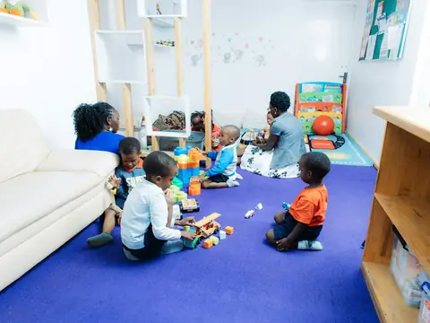
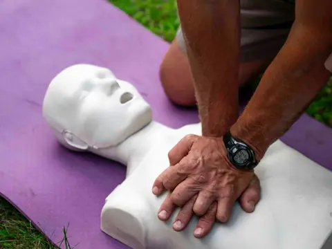
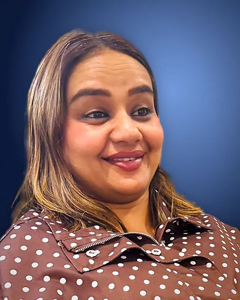

Find the course that moves your career forward
Powered by JOBGEN.AINot sure what to search for? Answer 4 quick questions
- Aged care worker
- Early childhood educator
- Teacher aide
- Disability support worker
- Trainer & assessor
- Team leader
- Counsellor
- WHS officer
- Community worker
- OSHC coordinator
- Site supervisor
The Pathway Map
See where your next step could take you
Drag the work you love onto the map. You’ll see each step from your first certificate upwards, the jobs it opens up, the time it takes and typical prices.
1Drag the area you want to studyTap the area you want to study
Drop an area hereTap an area to see your route
Your route appears here, from your first certificate upwards. Or just click an area.
Your route in Aged care & disability
Aged care & disability pathway
-
You start here
Certificate III
Individual Support
Personal care worker · Aged care worker
Your experience may count. RPL often 4–12 weeks, typically $1,400–$2,500.
- Study
- 6–12 months
- Typical price
- $3,000–$12,450
Already done
-
You start here
Certificate IV
Disability Support or Ageing Support
Senior disability support worker · Team leader – disability services
Your experience may count. RPL often 4–12 weeks, typically $2,000–$2,550.
- Study
- 6–12 months
- Typical price
- $3,000–$10,650
Already done
-
You start here
Diploma
Community Services
Case manager · Community services coordinator
Your experience may count. RPL often 6–12 weeks, typically $3,500–$4,000.
- Study
- 12–18 months
- Typical price
- $6,500–$22,850
Already done
-
You start here
Advanced Diploma
Community Sector Management
Service manager · Operations or program manager
Your experience may count. RPL often 6–12 weeks.
- Study
- 12–18 months
- Typical price
- $5,000–$6,000
Already done
Early childhood pathway
-
You start here
Certificate III
Early Childhood Education and Care
Early childhood educator · Childcare assistant
Your experience may count. RPL often 4–12 weeks, typically $2,000–$2,700.
- Study
- 6–12 months
- Typical price
- $3,000–$3,400
Already done
-
You start here
Diploma
Early Childhood Education and Care (Diploma)
Diploma-qualified educator · Room leader
Your experience may count. RPL often 6–12 weeks, typically $2,100–$2,700.
- Study
- 12–18 months
- Typical price
- $3,300–$7,500
Already done
Schools & OSHC pathway
-
You start here
Certificate IV
School Based Education Support
Education support officer · Teacher aide or assistant
Your experience may count. RPL often 4–12 weeks.
- Study
- 6–12 months
- Typical price
- $3,250–$5,900
Already done
-
You start here
Diploma
School Age Education and Care
OSHC coordinator · Assistant coordinator
Your experience may count. RPL often 6–12 weeks.
- Study
- 12–18 months
- Typical price
- $3,500–$7,900
Already done
Community & counselling pathway
-
You start here
Certificate III
Individual Support
Personal care worker · Aged care worker
Your experience may count. RPL often 4–12 weeks, typically $1,400–$2,500.
- Study
- 6–12 months
- Typical price
- $3,000–$12,450
Already done
-
You start here
Diploma
Community Services or Counselling
Case manager · Community services coordinator
Your experience may count. RPL often 6–12 weeks, typically $3,500–$4,000.
- Study
- 12–18 months
- Typical price
- $4,200–$22,850
Already done
-
You start here
Advanced Diploma
Community Sector Management
Service manager · Operations or program manager
Your experience may count. RPL often 6–12 weeks.
- Study
- 12–18 months
- Typical price
- $5,000–$6,000
Already done
Training & leadership pathway
-
You start here
Certificate IV
Training and Assessment or Work Health and Safety
Trainer and assessor (VET) · Workplace trainer
Your experience may count. RPL often 4–12 weeks, typically $1,100–$3,950.
- Study
- 6–12 months
- Typical price
- $2,500–$7,850
Already done
-
You start here
Diploma
Leadership and Management
Team leader or supervisor · Operations manager
Your experience may count. RPL often 6–12 weeks, typically $1,750–$2,750.
- Study
- 12–18 months
- Typical price
- $3,500–$9,000
Already done
Prices are typical full-fee ranges across Australian providers (October 2026). Whether RPL fits is decided by the training provider.
Course areas
Where do you want to make a difference?
Six areas, 16 courses. Pick one to see its courses, ways to study and typical prices.

Early childhood & education Training & assessment Leadership & safety Building & construction
First aid & CPR“From” prices are the lowest typical prices published by Australian providers (October 2026). Ask Poonam for an exact quote.

Meet your guide
Hi, I’m Poonam. Let’s find your path together.
Tell me about your experience and goals. I’ll give you a straight answer on what fits, and the simplest way to get there.
One person, start to finish
You talk to Poonam each time, so you never repeat your story.
Honest about fit
If a course or pathway isn’t right for you, she’ll say so.
Help with the paperwork
From RPL evidence to enrolment forms, get it right first time.
Clear about who does what
You’ll know which training organisation issues your qualification before you pay.
Student stories
From “I’ve done this work for years” to qualified. From “I don’t know where to start” to enrolled.
-
I’d worked in aged care for years without the certificate. Poonam explained RPL in plain English and helped me put my evidence together.
Aged care worker, no certificateCertificate III through RPL
Priya S.Certificate III in Individual Support
-
I couldn’t decide between studying online and RPL for the TAE. One conversation and I knew which suited my situation.
Workplace trainer without the TAEQualified trainer and assessor
Daniel M.Certificate IV in Training and Assessment
-
She was upfront that the diploma fitted my goals better than the course I’d been looking at, and walked me through what that meant.
Certificate III educatorDiploma, ready to lead a room
Mei L.Diploma of Early Childhood Education and Care
-
I wanted to work in schools but didn’t know where to start. Poonam explained the course, the placement and the likely cost before I committed to anything.
Parent volunteer at a primary schoolStudying to become a teacher aide
Sam R.Certificate IV in School Based Education Support
Why these courses
These jobs need more people.
Thousands more qualified carers, educators and teacher aides will be needed in the next ten years. A qualification now puts you in line for that work.
-
Victoria needs
47,962
more aged care and disability carers by 2034
-
Victoria needs
17,183
more childcare and OSHC workers by 2034
Source: Victorian Government, “Out of school hours care worker”
-
Victoria needs
8,413
more teacher aides by 2034
-
Victoria needs
335,500
new health and community services workers by 2034
Source: Victorian Government, “Working with children and young people”
See what the work is like
Working in aged careAustralian Government Department of Health, Disability and Ageing · YouTube Shape the future in early childhoodQueensland Department of Education · YouTube
Videos play from YouTube in privacy-enhanced mode, only when you press play.
Questions
Good questions to ask first
Straight answers to what people ask most before choosing a course.
Read all FAQsI’m not sure which course is right for me. Where do I start?
Start with a free chat or the online eligibility check. Tell Poonam about your work so far and where you want to go, and she will suggest a course and the most sensible way to get it – or tell you honestly if now isn’t the right time.
Is RPL a shortcut or a “bought” certificate?
No. You still have to prove competence with real evidence, and an assessor will usually talk with you and may ask you to demonstrate tasks. If there are gaps, you complete extra training or assessment. The qualification you receive is the same one people get through full study.
Who actually delivers the course and issues my certificate?
Nationally recognised qualifications can only be issued by a Registered Training Organisation (RTO). Pathwise Courses is an advisory service, not an RTO: Poonam helps you choose and prepare, and a partner RTO enrols, trains, assesses and issues your qualification. You will always be told which RTO before you enrol.
How much do courses cost?
Fees depend on the course, the RTO and whether you study the full course or use RPL. Poonam will give you the full cost in writing – including any extra fees – before you decide.
On Instagram
See the work, reel by reel
Short videos from the jobs these courses lead to.
Reels load from Instagram when you scroll to this section.